The Plotline email with your account-setup link, opened on the email address you gave Plotline.
Your courts: a name players will recognise for each (for example “Court 1” or “Garden Court 1”) and its sport.
Your normal hourly price for each court, plus any peak or off-peak prices and the hours they apply.
Your weekly opening hours, including regular breaks such as lunch or maintenance.
Where players should pay: the GCash, Maya or bank account name and number you check every day, and a QR code screenshot if you have one.
Your rules: how far ahead players may book, how long they have to pay, and how late they may cancel.
Optional: photos of each court and a wide banner photo of the venue, your address and a Google Maps link, and your Facebook or Instagram page.
Use a computer for setup if you canEverything works on a phone, but setting hours and prices is quicker on a larger screen. Daily tasks are easy on a phone.
Who does what
You (the venue)
Plotline
Courts, prices, hours, payment details, approving payments, refunds to players
Your account, publishing support, online card payments (PayMongo), the monthly fee statement
Understand booking statuses
Find a booking in Bookings to see where it stands and what to do next.
Waiting for payment→Under review→Confirmed→Completed
Status
What it means
Waiting for payment
The player has a temporary hold and needs to pay and submit proof.
Payment under review
Proof has arrived. Check the transfer and approve or reject it.
Confirmed
Payment is accepted and the court time is reserved.
Completed
The confirmed booking’s play time has ended.
Expired
Payment proof did not arrive before the hold ended. The time opens again.
Rejected
Proof was rejected too many times. The time opens again.
Cancelled
The player or venue cancelled the booking. The time opens again.
When proof is rejectedIf the player has attempts left, the booking returns to Waiting for payment with a fresh hold. A successful online payment can confirm automatically.
For a manual payment, the player transfers the full booking total directly to your venue.
Who gets the money
Players pay you, straight into your own account. On top of your court price, each confirmed online booking carries a ₱10 booking fee, so the player sends the total. After the month ends, Plotline sends the venue an invoice for the fees due.
One 1-hour booking at ₱400
Amount
Court price (yours)
₱400
Booking fee (Plotline’s)
₱10
The player sends you
₱410
What happens nextCheck that ₱410 reached your account before approving the proof. The ₱10 fee appears in Reports and is included in the venue’s monthly statement.
On a phoneThe same menu slides in from the left. Account (top right) is where you sign out. If you manage more than one venue, check the venue name at the top before changing anything.
Publish in five steps
Players can’t see or book your venue until you publish it. The checklist on the Dashboard tracks the five required items.
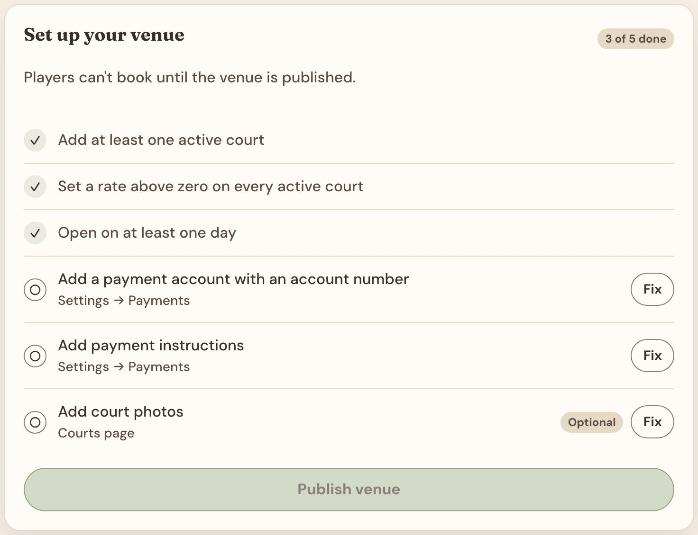
Three of five done. Select Fix on any open item to jump straight to the right page.
Required item
Where to do it
Page
1. At least one active court
Courts → Add court
2. A price above zero on every active court
Courts → the court
3. Open on at least one day
Schedule → Opening hours
4. A payment account with a number
Settings → Payment Setup
5. Saved payment instructions
Settings → Payment Setup
Court photos are optional and don’t count toward the five. At 5 of 5 done, select Publish venue. Then check your page as a player would (page ).
Courts and base prices
Each court has a sport and a default hourly price. Peak prices come later, under Schedule.
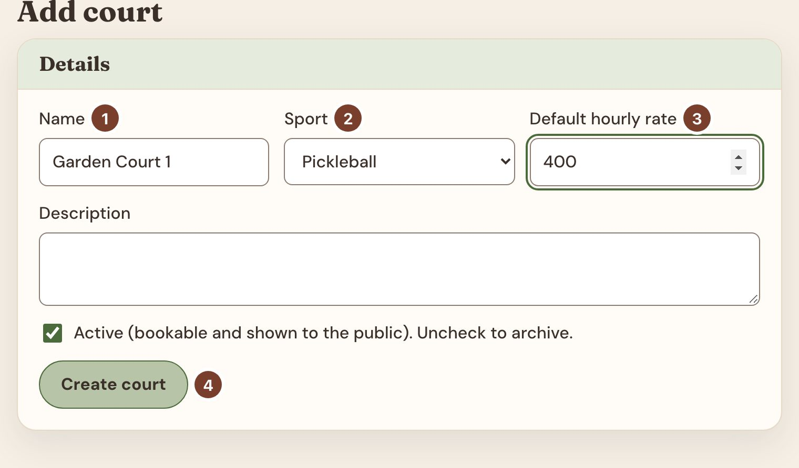
Open Courts and select Add court.
1Name: what players will see, such as “Court 1”.
2Sport: players filter by sport, and a booking can only move to a court of the same sport.
3Default hourly rate: your normal price per hour, in pesos.
4Leave Active ticked and select Create court.
The saved court opens so you can add photos. The first photo is the cover; use Make cover to choose another. To edit a court later, open it from Courts and select Save changes.
Closing a court for goodUntick Active and save. Players can no longer book it, and its past bookings stay in your records. You can delete only a court that has never been booked.
Opening hours
Open Schedule. Opening hours, Prices, Promos and Closures are tabs on the same page.
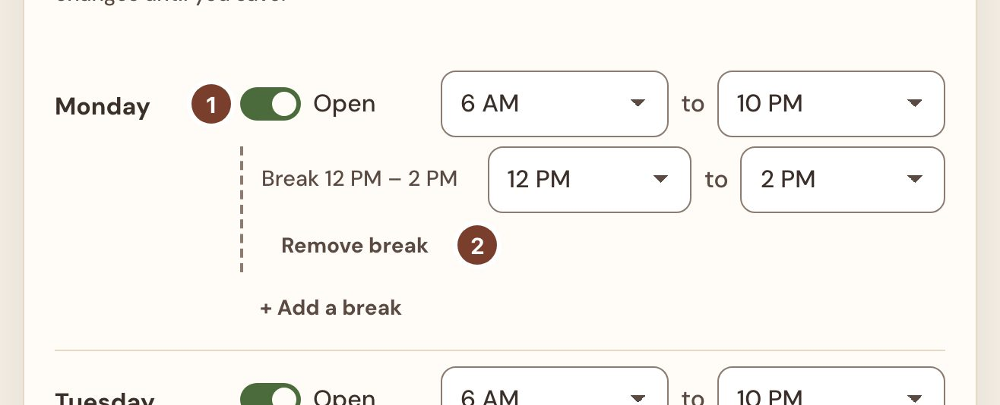
For each day, use the switch 1 to set Open or Closed, then choose the opening and closing hour.
For a regular break, select + Add a break and choose its start and end. Remove break2 deletes it.
To repeat a day, use Copy hours from, pick that day, then choose which days to copy it to.
Check Week at a glance: green is bookable, striped is closed.
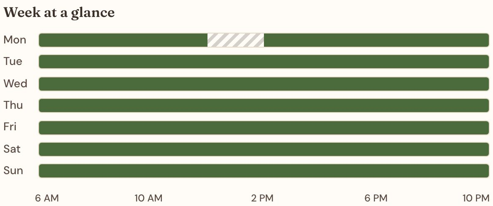
One court keeps different hours? Under Courts with different hours, pick it and select Give this court different hours. A notice confirms you are editing that court only. Use opening hours puts it back on the venue’s hours.
Nothing is saved yetYour changes wait in a draft until you select Review & save in the bar at the bottom of the page (next page).
Peak prices, then save
An override price replaces the default rate for chosen hours, for example weekday evenings.
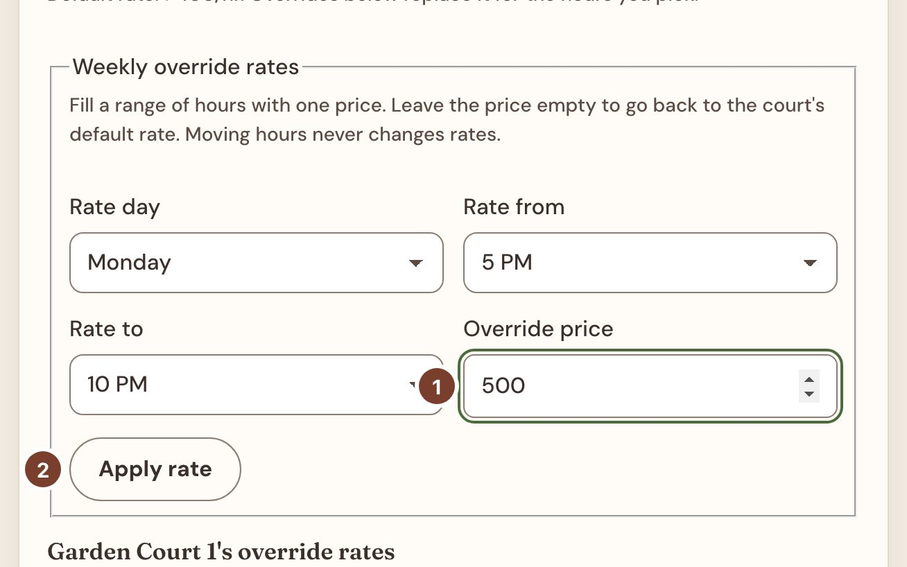
On the Prices tab, choose the court, the Rate day and the hours (Rate from, Rate to).
Type the hourly Override price1 and select Apply rate2. Repeat for other days.
To go back to the default rate for some hours, apply them with the price left empty.
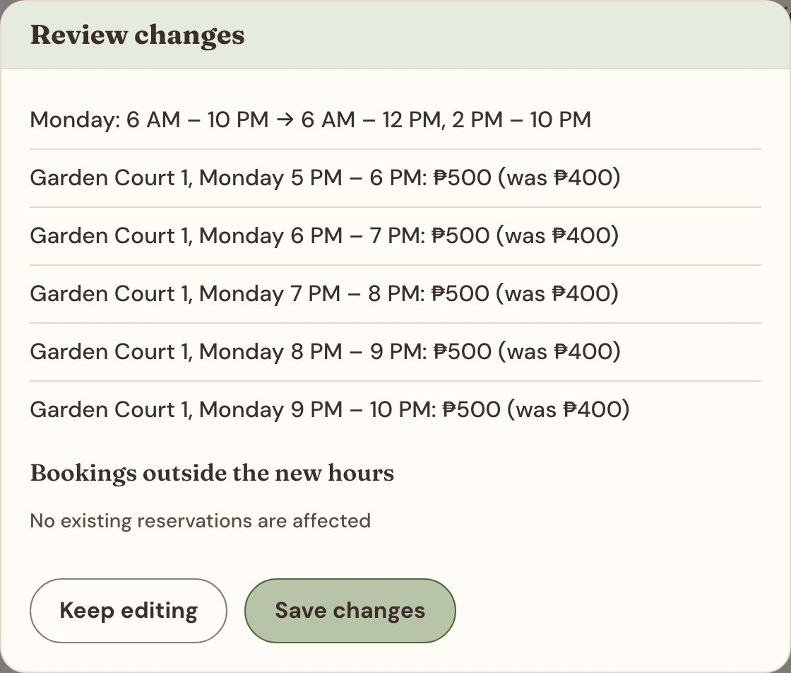
Select Review & save. The summary lists every change on both tabs.
Bookings outside the new hours lists existing bookings in the next 90 days that fall outside your new hours. They are not moved or cancelled, so contact those players yourself.
Select Save changes. Discard in the bottom bar throws the whole draft away.
New prices apply to new bookings only. Existing bookings keep the price they were made at.
Limited-time promo prices
For a launch week or a quiet weekday morning, add a promo on the Promos tab. It replaces your usual price for the hours you choose.
Select Add promo and type a Label players will see, such as “Weekday morning promo”.
Choose Starts on and Ends on, the Days, the Courts and the hours (From, Until).
Type one Price per hour for all the courts you ticked. Courts that need a different price need their own promo.
Select Save promo. Unlike hours and prices, promos save straight away. Players see the promo price and label on the booking page.
Pause or remove it. Untick Active to pause a promo, or choose Delete in the list. Two active promos cannot cover the same court, day and hour in the same dates.
Bookings already made keep the price they were made at.
Close for a day or an event
For a holiday, repair or private event, use the Closures tab. Your weekly hours stay as they are.
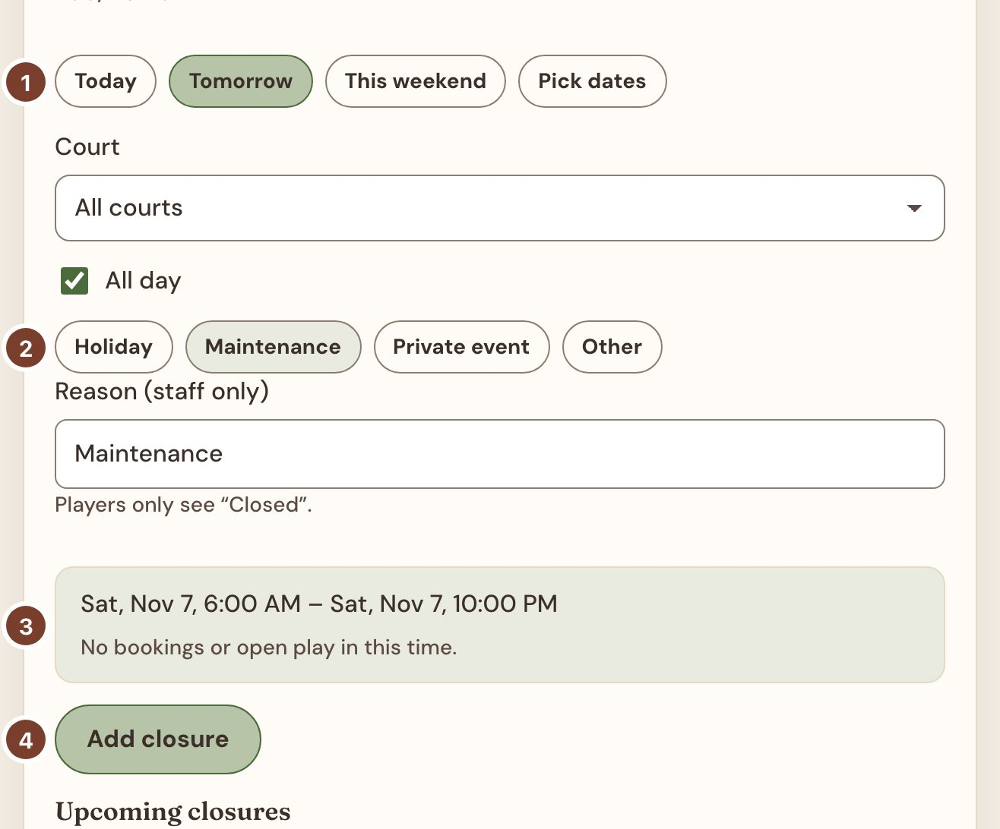
1Choose Today, Tomorrow, This weekend or Pick dates. Then choose All courts or one court. All day covers the whole operating day; untick it to set hours.
2Pick a reason or type your own. Only staff see it; players just see “Closed”.
3Read the summary. It shows the exact time span and warns about any bookings or open play already in it.
4Select Add closure. It appears under Upcoming closures, where Remove reopens the time.
Closures never cancel bookingsPlayers already booked in that time keep their booking. Move or cancel them yourself in Bookings (page ).
How players pay you
Open Settings → Payment Setup. Players see these details right after they book.
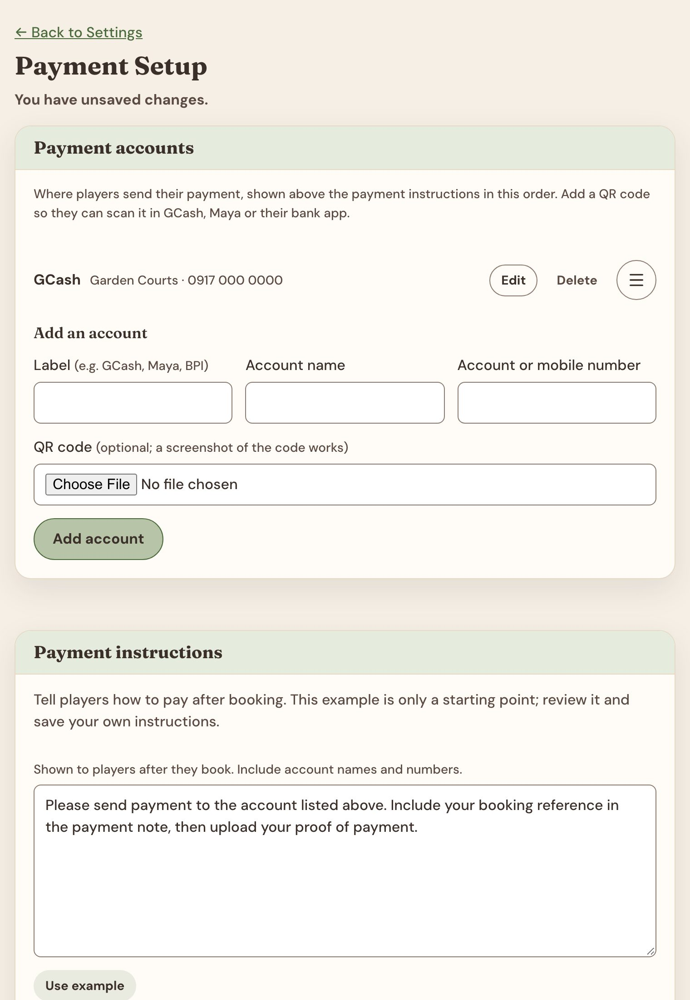
Under Add an account, enter a Label players know (GCash, Maya, BPI), the Account name and the Account or mobile number. Add a QR code screenshot if you have one. Select Add account.
Under Payment instructions, select Use example and edit it: what to put in the payment note, and that players must upload a screenshot of their receipt. Select Save instructions.
Use an account you check every dayYou approve each booking by matching its proof to money that really arrived (page ). Online payments on this page shows whether card payments are on. Ask Plotline to change it.
See what players see
After publishing, select View public site. Check each court, its hours and prices on a few different days.
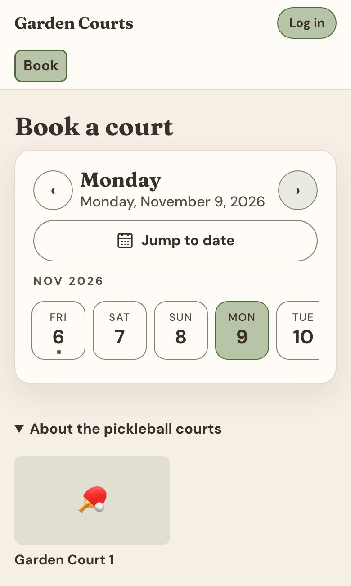
Players choose a day…
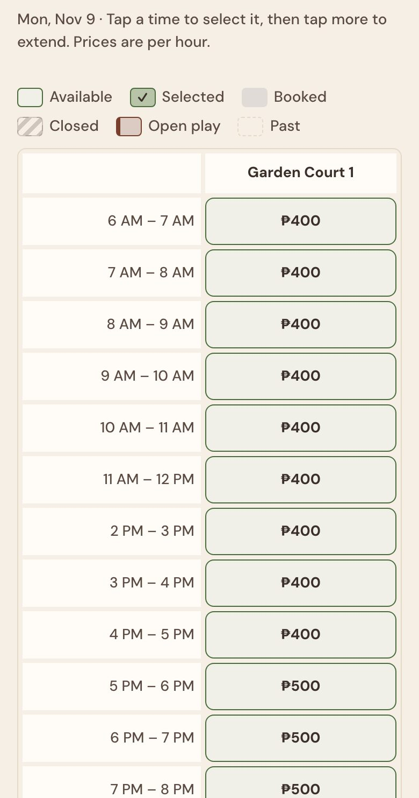
…then tap free hours. Monday shows the break and ₱500 peak.
Make the page your own
Each section under Settings has its own Save button, so save before you leave a section.
Venue Profile: venue name, city, street address with a Google Maps link, contact and social links. Timezone, currency and slot length are shown here; ask Plotline to change them.
Website Appearance: colour preset, banner photo, amenities, arrival information and the order sports appear in.
Policies & Waivers: the waiver players must accept when booking online. Reset to default loads standard wording to edit. Saving it blank turns the waiver off.
A listing in Plotline’s venue showcase is separate from publishing; ask Plotline.
Booking rules
Settings → Booking Rules decides how far ahead players book, how long they have to pay and when they can cancel.
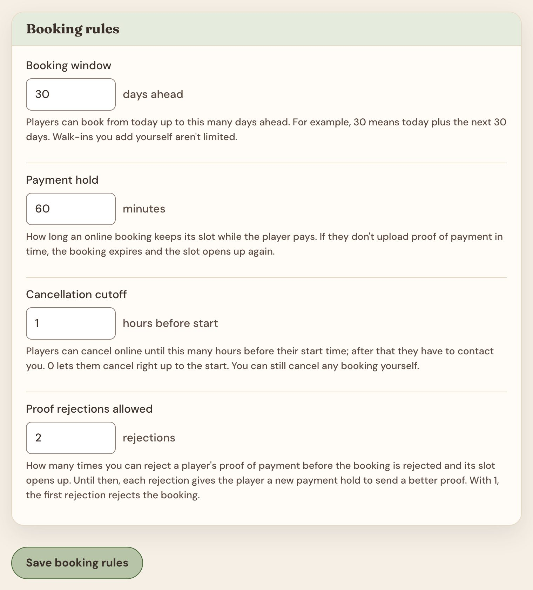
Rule
Allowed
What it means
Booking window
1–365 days
30 = today plus the next 30 days.
Payment hold
5–1,440 min
Time to upload proof before the booking expires and the slot reopens.
Cancellation cutoff
0–168 h
After this, players must contact you to cancel. You can always cancel.
Proof rejections allowed
1–10
Rejections before the booking is rejected for good. Until then, each rejection gives the player a fresh hold to try again.
Choosing a payment holdAllow enough time for a transfer and a screenshot, but not so long that unpaid holds block your busiest hours. 30–60 minutes suits most venues.
Your day on the Dashboard
Open the Dashboard first each day. It answers three questions: what needs approving, who is playing and what you earned.
Proofs to review shows how many payments are waiting. Select Review proofs to work through them (next page).
Today’s courts lays out each court by hour. Tap a booking reference to open it. Today’s schedule lists the same bookings with their status.
Earnings covers Today, This week, This month or a custom range.
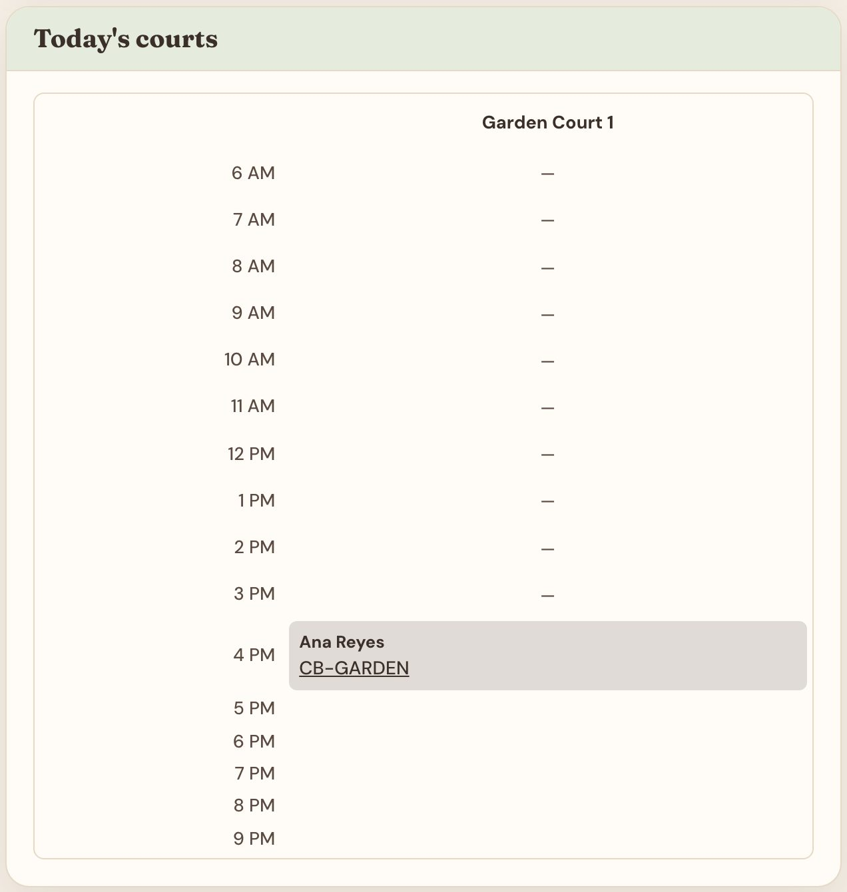
Today’s courts
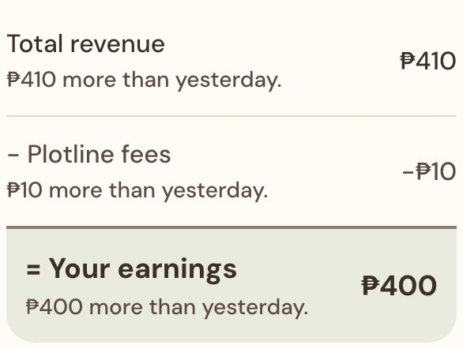
₱410 received, less the ₱10 fee, leaves ₱400 for you.
Further down: Collected by payment method, Coming up (confirmed bookings still to be played), Booked hours per court, a collected-per-day chart and Export to download bookings or payments as a spreadsheet (CSV). Tick Include contact details only when you need them, and store the file safely.
Approve or reject a payment
Open Bookings. It starts on Needs review, the bookings with a proof waiting. Select one to see its details.
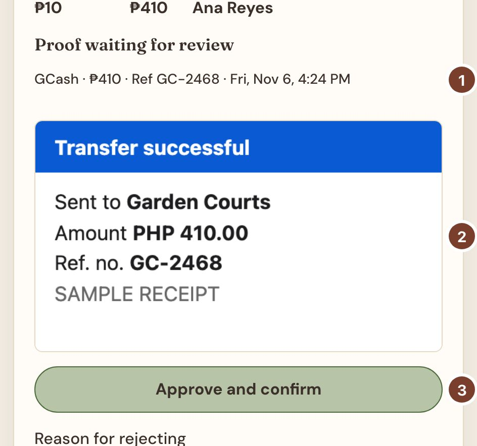
1The method, amount and reference the player entered.
2Their receipt screenshot. Tap it to enlarge.
3Approve and confirm confirms the booking.
Approve only when all three hold:
The money is in your account (check your GCash, Maya or bank app, not just the screenshot).
The amount equals the booking’s total (₱410 for a ₱400 hour).
The reference matches your account history.
If something doesn’t match
Write what is wrong in Reason for rejecting, for example “Amount received is ₱400; please send the remaining ₱10”, and select Reject proof. The player sees your reason. Whether they can try again depends on Proof rejections allowed (page ).
Card paymentsA successful online card payment confirms by itself. If you see Refund due or Check duplicate, the money arrived but the booking couldn’t take it. Check it and refund the player outside the app.
Find, move or cancel a booking
Find a booking
In Bookings, type a reference (such as CB-GARDEN), a name or an email and select Search. Search covers every booking, whatever the filters say. Clear search returns to the Status, Source and Date filters.
Move a booking to another time
Open a confirmed booking that hasn’t finished and select Reschedule. For a booking already under way, choose the hour to move from; earlier hours stay where they are.
Choose the new date, a court of the same sport and a free start time. Write a reason; the player sees it.
Check the Moving and To summary, then select Move booking.
The price and payment carry over, and no new fee is charged. Moving only part of a booking creates a second reference for the moved part; note it down.
Cancel a booking
Open the booking before it ends. Under Cancel booking, write a reason and select Cancel booking. The player sees the reason and the time becomes free. Cancel any moved part separately.
Who cancels
Booking fee
Refund to player
You (the venue)
Credited back to you on your statement
Arranged by you, outside the app
The player
Still owed to Plotline
Open play sessions
Open play reserves one or more courts for a group activity, such as a social night or a clinic. Players see it on the booking page but can’t book those hours.
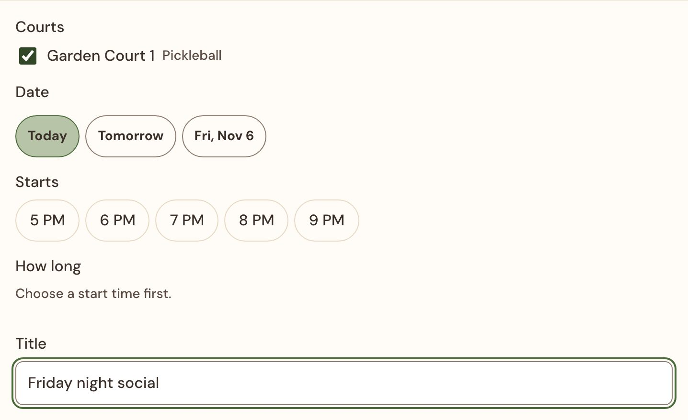
Under New session, tick every court the group will use and pick the date.
Pick a start time and How long. Only times when all the ticked courts are open appear.
Add a Title. Use Details for skill level, price and what to bring. To link an RSVP form or group chat, fill in a link label and an address starting with https://.
Select Add session and check it under Upcoming sessions.
To change a future session, select Edit, update it and select Save changes. Delete removes it and frees the courts. Plotline doesn’t take payment for open play; collect any fee your own way.
Your Plotline fees
Open Reports. Plotline charges nothing to set up or each month. You only pay the ₱10 booking fee that players already sent you with each confirmed online booking.
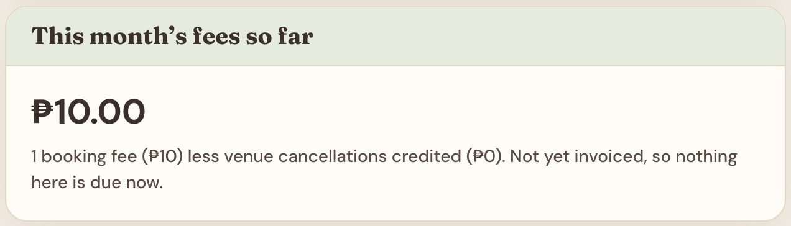
This month’s fees so far
A running total for the current month: booking fees, less credits for bookings you cancelled. Nothing in it is due yet.
Amount due
After a month ends, Plotline sends an invoice for it. Amount due adds up the invoices you haven’t paid. Each shows its due date, and an Overdue label once that date has passed. Pay using the instructions Plotline sends with the invoice.
Check an amount
Choose a Month to see its totals and how players paid. In Charges, search a booking reference to find its fee and open the booking. Under Invoice history, Details lists each invoice’s fees, credits and total, and paid invoices show the payment recorded.
Paid, but still showing as due?Email Plotline with your venue name, the invoice month and your payment reference.
Daily, weekly and monthly checklist
Print this page and keep it at the front desk.
Every day
Dashboard: clear Proofs to review, checking each transfer in your own account before approving.
Look at Today’s courts before opening, and again in the afternoon for late bookings.
Bookings: check Needs review again before closing so no player waits overnight.
Every week
Schedule → Closures: add holidays, repairs and private events for the next weeks.
Open Play: post next week’s sessions.
Earnings → This week: compare Collected with your GCash, Maya and bank history.
View public site: check prices and hours for the coming days.
Every month
Reports: check last month’s invoice and pay the Amount due before its due date.
Earnings → This month, then Export the payments CSV for your own records.
Review your prices and booking rules against how busy you were.
Whenever something changes
New account number: add it in Payment Setup before deleting the old one, and update the instructions.
New court or price: update Courts and the Prices tab, then Review & save.
Troubleshooting and support
Problem
Try this
Setup link expired or opens the wrong venue
Already set a password? Sign in at your venue’s /admin/login. If not, ask Plotline for a new link.
Publish venue is greyed out
Open the Dashboard and select Fix on each open item. Every active court needs a price above zero.
A time is missing on the public page
Check the court is Active, then its opening hours, breaks, court-specific hours, Closures and Open Play.
A price looks wrong
Check the Prices tab for that court and day. Did you select Save changes after Review & save?
Saving the schedule fails because someone else changed it
Note your edits, select Reload latest, then make them again.
A player paid ₱400 instead of ₱410
Check the amount received against the booking total. Reject with a clear reason if the payment is incomplete.
Contact Plotline
Tell us your venue name, the page you were on, any booking reference and the exact message you saw. A screenshot helps. To arrange a call, include a few times that suit you.